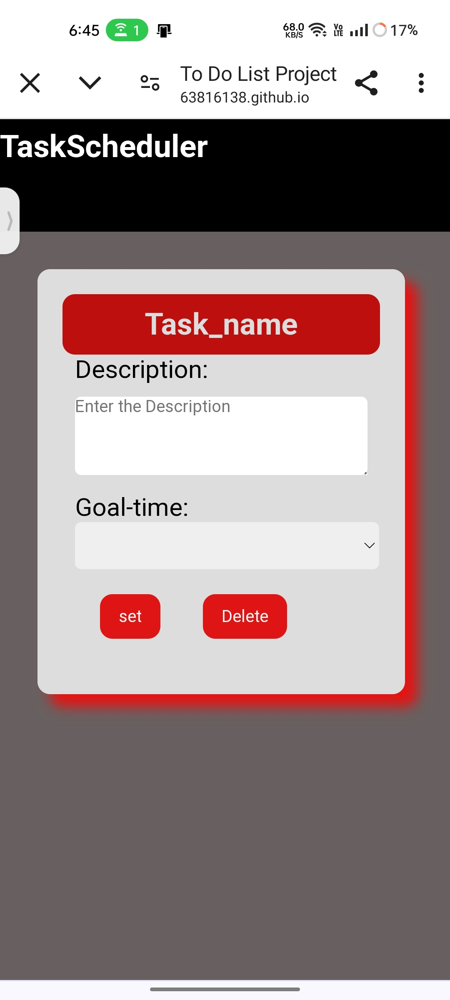
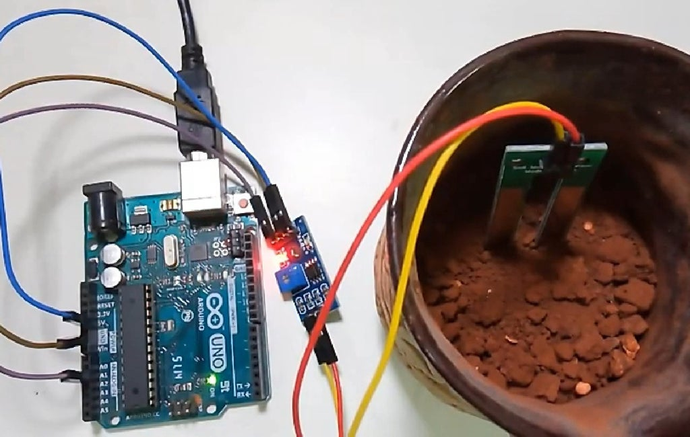

Task Manager Website
Technologies: HTML, CSS, JavaScript
GitHub: Task Manager Website
Live-link: Website
Developed a fully responsive and functional Task Manager website using HTML, CSS, and JavaScript.
The application allows users to:
- Create, update, and delete tasks.
- Organize tasks based on their status (completed, pending).
- Implement various UI/UX features for better user experience, such as dynamic task filtering, task count, and responsive design.
- This project helped me enhance my understanding of DOM manipulation, event handling in JavaScript, and responsive web design principles.

Soil Analysis System
Technologies: Arduino, Temperature Sensor, Soil Moisture Sensor, pH Meter
Developed a Soil Analysis System to help identify the best crops for a specific soil type by analyzing key parameters like temperature, moisture content, and pH levels.
The project includes:
- An Arduino board integrated with temperature, soil moisture, and pH sensors.
- Real-time data collection and analysis to determine soil conditions
- Algorithm-based recommendations for optimal crop selection based on soil data.
- This project enhanced my skills in embedded systems, sensor integration, and data-driven decision-making in agriculture.